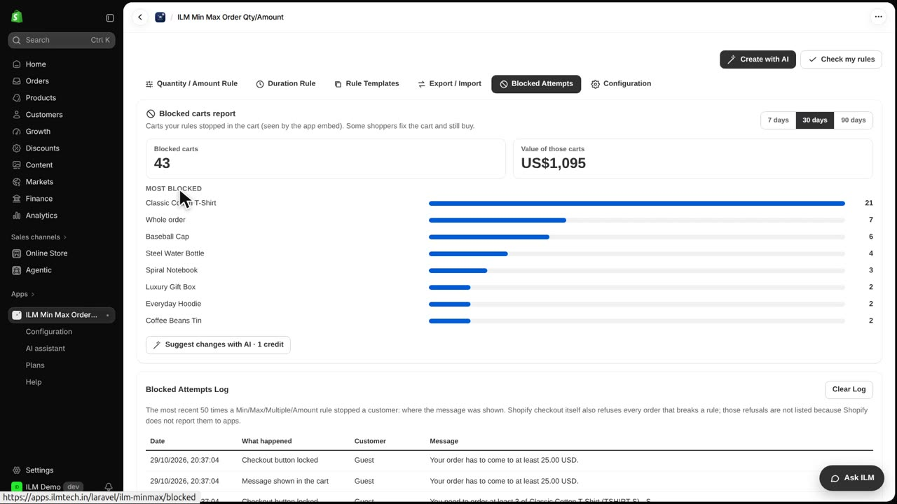
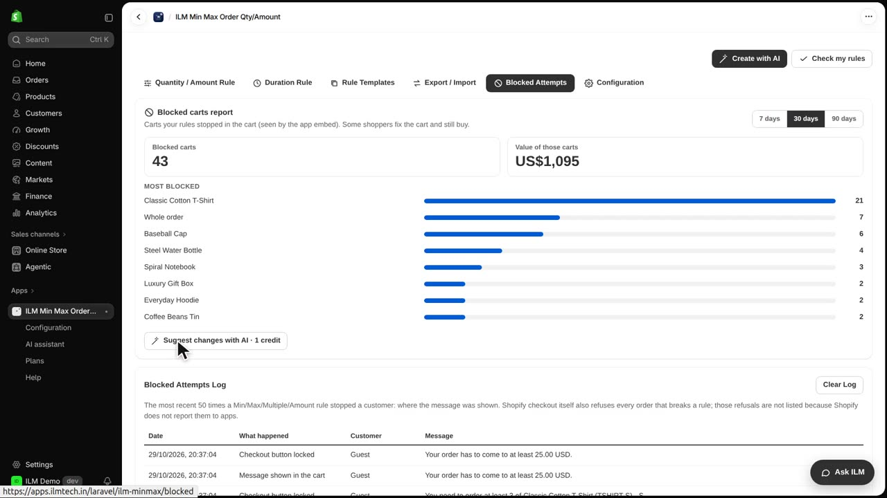

On the Pro plan, the blocked carts report shows how often your rules stop shoppers, and what those carts were worth. It helps you see whether your minimum and maximum limits are turning away real sales. Today we look at the report in the ILM Demo store, where rules apply to products like the Classic Cotton T-Shirt and the Everyday Hoodie.
The report sits at the top of the Blocked Attempts tab. Click the tab to open it, then look at the Blocked carts report heading. Use the Period field to choose the date range you want to review.
The report shows the value of those carts, so you can see the money your rules held back. It also lists the products that are blocked most often, which points to rules that may be too strict. No customer data is stored for this report, so shopper privacy is protected.

Suggest changes with AI reads the report and proposes rule changes that could win those sales back. It uses one credit each time you run it.
